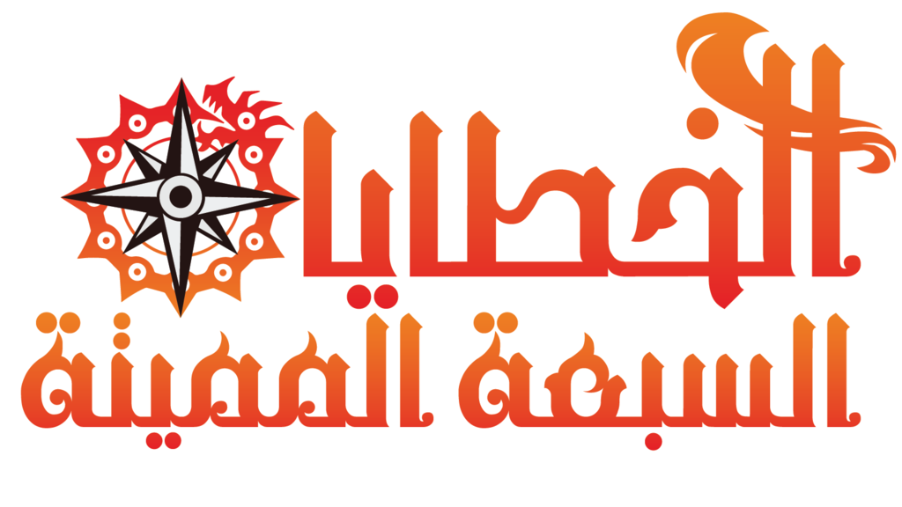
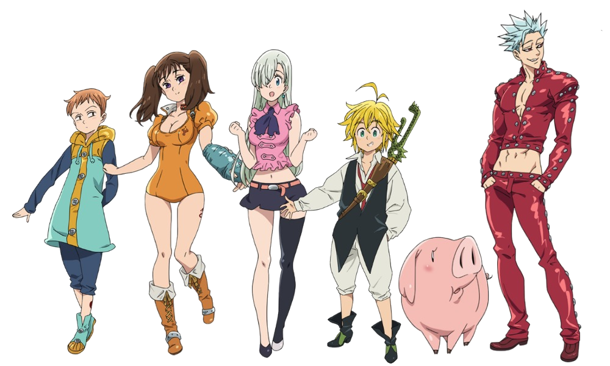

Os Sete Pecados Capitais (七つの大罪, Nanatsu no Taizai) estavam na ordem mais forte e mais cruel dos Cavaleiros Sagrados no Reino de Liones. Eles foram formados por sete criminosos brutais, que tinham sido todos condenados por crimes graves e tinham esculpido os símbolos de sete animais em seus corpos. Depois de terem sido acusados de assassinar o Grande Cavaleiro Sagrado, foram indefinidamente dissolvidos, bem como rotulados de traidores e vilões. Eles são os principais protagonistas da série.
X